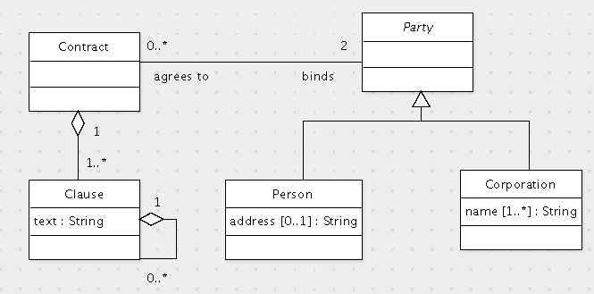
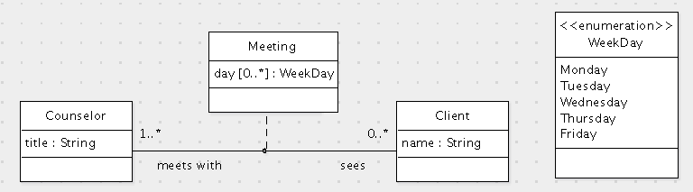

Grading criteria (0.48 points each):

create table Counselor(
id int primary key,
title varchar(200) not null);
create table Client(
id int primary key,
name varchar(200) not null);
create table Meeting(
/* If either a client or a counselor is deleted or updated, all meetings
are also deleted or updated because Meeting is an association between
Counselor and Client. */
sees int references Client(id) on delete cascade on update cascade,
meetsWith int references Counselor(id) on delete cascade on update cascade,
primary key(sees, meetsWith));
create table MeetingDay(
sees int,
meetsWith int,
day enum('Monday','Tuesday','Wednesday','Thursday','Friday'),
/* If a meeting is deleted or updated, the days are also deleted or updated
because they implement a multi-valued attribute of Meeting. */
foreign key(sees, meetsWith) references Meeting(sees, meetsWith) on delete cascade on update cascade,
primary key(sees, meetsWith, day));
Note that the foreign key of MeetingDay is the primary key of Meeting, so one cannot use the abbreviation for specifying a foreign key in this case. Specifying separately that MeetingDay.sees and MeetingDay.meetsWith are foreign keys is wrong. It would allow one to specify a MeetingDay that does not correspond to a Meeting.
Grading criteria
create table Color( name varchar(100) primary key ); create table Texture( type varchar(20) primary key, description varchar(255) ); create table Paint( sku int primary key, price double not null, maker varchar(100) not null, color varchar(100) references Color(name) on update cascade on delete no action, texture varchar(20) references Texture(type) on update cascade on delete no action );
Express the following queries in SQL:
One must be careful in this query to be sure that colors with no paints are listed with a count of 0. One must also be careful to avoid overcounting the number of textures. There could be several Paint records with the same color and texture but each texture should be counted only once. Here is the simplest solution:
select c.name, count(distinct p.texture)
from Color c left join Paint p on (c.name = p.color)
where c.name like '%z%'
group by c.name;
Alternatively, one can avoid the outer join by using a union of two queries. The first handles the case in which a paint exists, and the second handles the case in which a paint does not exist. In the former case, no join is required. For the latter case, one must use a subquery:
select p.color, count(distinct p.texture)
from Paint p
where p.color like '%z%'
group by p.color
union all
select c.name, 0
from Color c
where c.name like '%z%'
and not exists (
select *
from Paint p
where p.color = c.name
);
Grading criteria:
select distinct t.type, t.description
from Texture t, Paint p
where t.type = p.texture
and p.color = 'yellow'
and p.price < 10;
Grading criteria (1.25 points each):
public void printALowestPricePaint(String color, String texture) {
PreparedStatement ps = connection.prepareStatement(
"select p.sku, p.price, p.maker from Paint p" +
" where p.color=? and p.texture=?"
);
ps.setString(1, color);
ps.setString(2, texture);
ResultSet rs = ps.executeQuery();
double lowestPrice = Double.POSITIVE_INFINITY;
int sku;
String maker;
while (rs.next()) {
double price = rs.getDouble(2);
if (price < lowest) {
lowest = price;
sku = rs.getInt(1);
maker = rs.getString(3);
}
}
if (lowestPrice < Double.POSITIVE_INFINITY) {
System.out.println(lowest + " " + sku + " " + maker);
} else {
System.out.println("The color/texture combination is not available.");
}
}
The most common mistake was to omit dealing with the case when there are no paints for the specified color and texture combination.
Grading criteria (1.46 points each):
© 2011 Ken Baclawski. All rights reserved. Redistribution and use in source and binary forms, with or without modification, are permitted provided that redistributions and uses retain this copyright notice.